SPA: Aplicación de una sóla página (es la esencia de Angular). La página núnca realizará un refresh.
Reactivo RxJs
Asíncrono
Versiones, actualizaciones y compatibilidad: X.Y.Z
X: Mayor (cada 6 meses o un año, podría afectar al código aunque hasta ahora no ha solido pasar)
Y: Menor (nuevas características o funcionalidades menores, no afecta al código existente)
Z: Bug
Lengua de programación TypeScript
Es un superconjunto de JavaScript (ECMAScript)
Tipos basados en clases e interfaces
Tipo de datos más fuerte
Atributos, métodos y constructores
Tipos Generics
Decoradores y más
Desarrollado por MS
2.4. Instalaciones y herramientas necesarias
Descargar node de su web, es recomendable usar la versión LTS
Al crear un proyecto con Angular, agregará TypeScript, pero es recomendable instalarlo de forma global proque ayuda a detectar errores en tiempo de escritura. En la web, en la sección Downloads -> "Globally Installing TypeScript" podremos ver el comando para instalarlo: npm install -g typescript (-g significa global, por lo que deberemos ejecutarlo como administrador).
El siguiente paso es instalar Angular CIL. En la web -> Get Started -> Get Started -> Install the Angular CLI: npm install -g @angular/cli("ng version" para verificar que se instaló bien. Veremos un warning, pero no es importante es una dependencia opcional que sólo está para Mac)
Como editor usaremos Atom
2.5. Una mirada al editor Atom e instalando algunos plugins
Pasos para instalar paquetes:
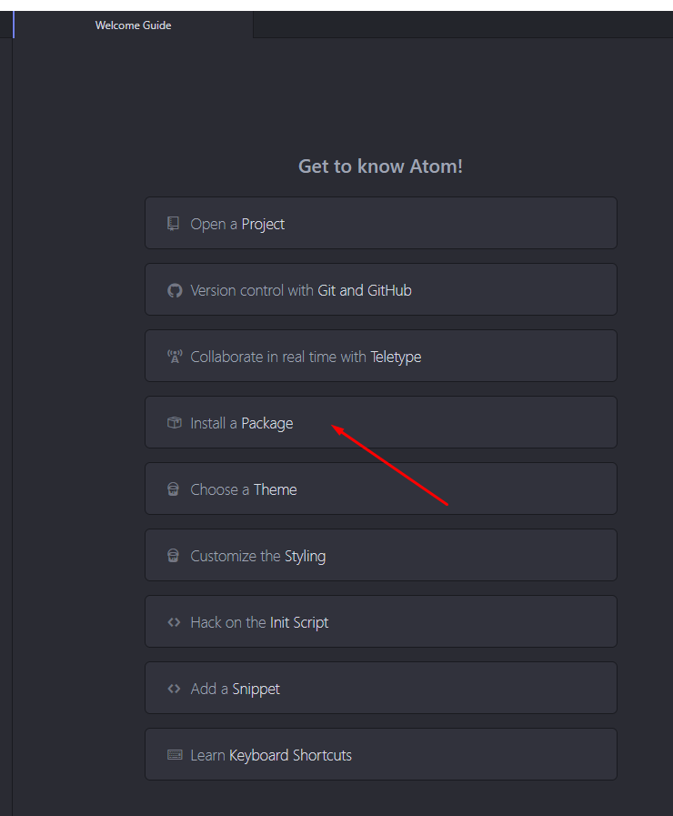
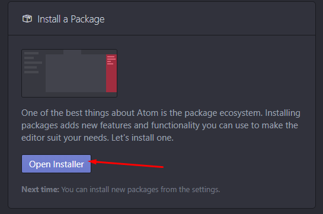
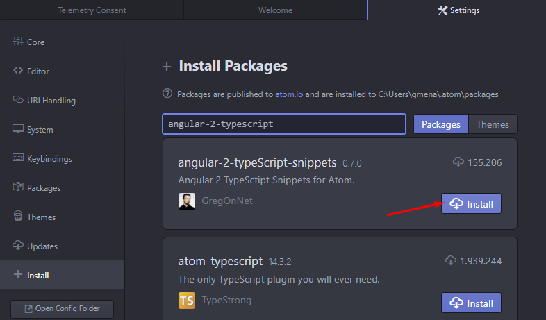
Si diera problemas desde la aplicación, se puede ejecutar desde consola (arrancada como administrador): apm install angular-2-typescript-snippets
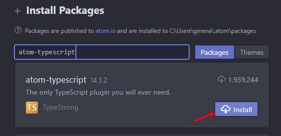
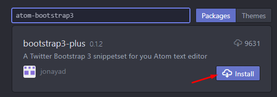
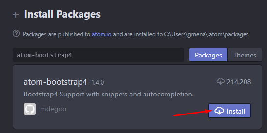
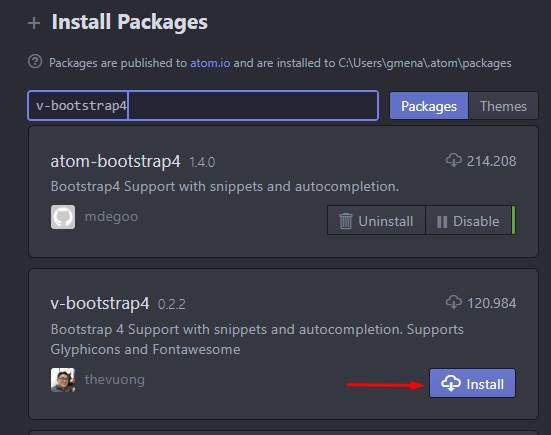
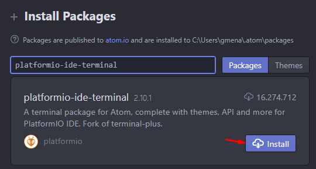
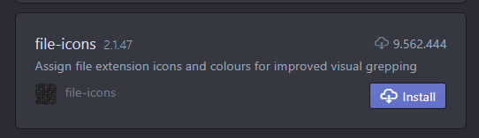
El siguiente paso es seleccionar un tema (dejaré el que viene por defecto):
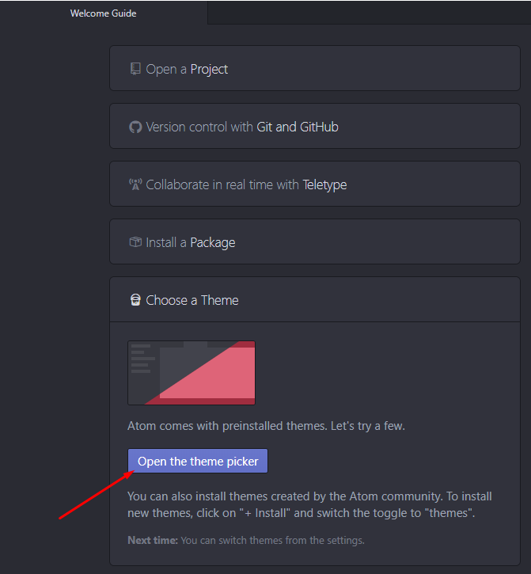
2.6. Creando nuestra aplicación Angular
En el directorio donde queremos crear el proyecto ejecutamos ng new clientes-app (respondemos que no cuando nos pregunte si queremos añadir Angular routing y elegimos el estilo CSS)
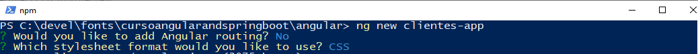
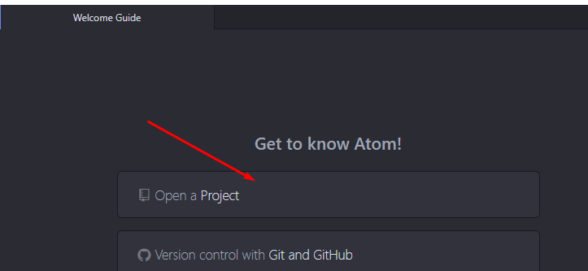
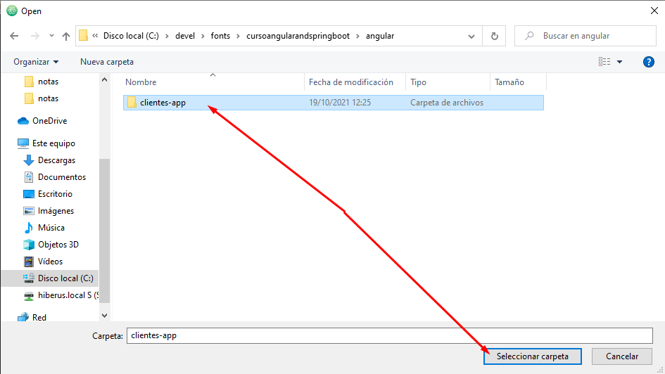
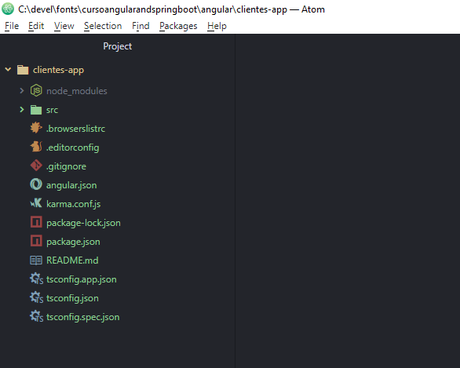
En el directorio de la aplicación, arrancamos el servidor con: ng serve -o (-o para que abra el navegador)
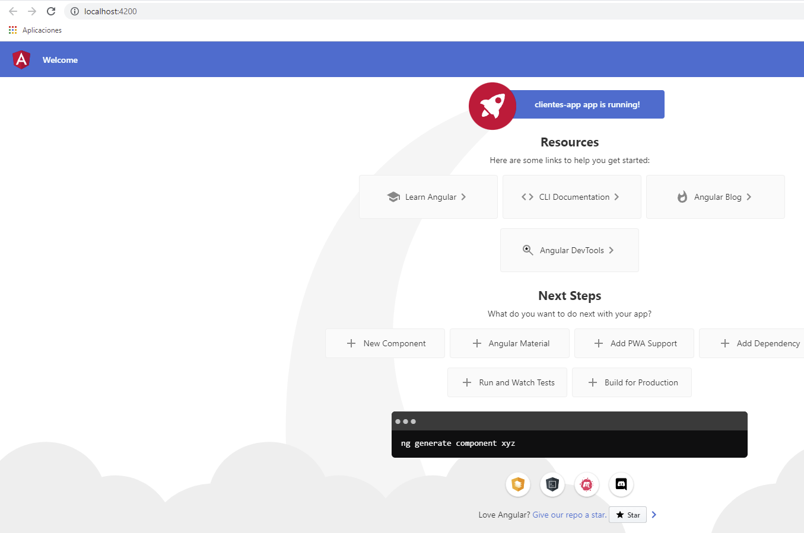
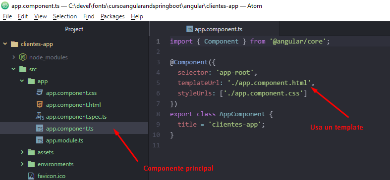